Thief
Appearances: FF1, FF3, FF4, FF5, FF6, FF9, FF10, FFX-2, FF11, FF12RW, FFT, FFTA, FFTA2
Aliases: None
The defining characteristics of the thief are its green rag-tag clothing and the ability to steal items from the enemy, which usually has a useless success rate. However, there is typically an item in the game, usually called the "Thief Glove" to change some ability related to the Thief. Steal also usually gives way to "Mug" later in the game, where the job can both attack and steal at the same time. They typically equip knives or short swords and thrive on living in the shadows. Their agility/speed allows them to escape from battles easier.
Similar Job Classes: Ninja
Expand All Images | Collapse All Images
| FF1 |
| 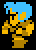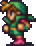 |
| NAME: Thief |
| OVERVIEW: Thief does not have the ability to steal in this game, but is very good at running away from battles. Thief evolves into Ninja |
| WEAPONS: Coral Sword, Dragon Sword, Falchion, Masamune, Rapier, Rune Sword, Scimitar, Large Dagger, Silver Knife, Small Dagger, |
| ATTRIBUTES: Average strength, high agility, high luck, low magic
| | MAGIC: None |
|
| FF3 |
 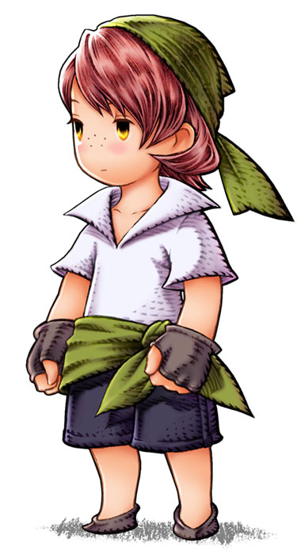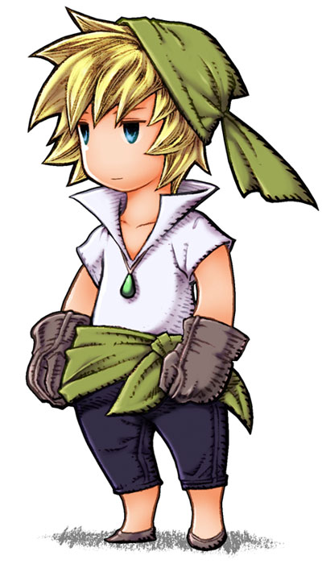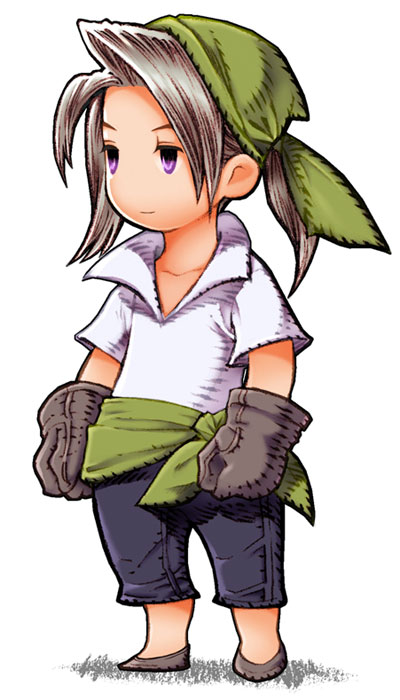 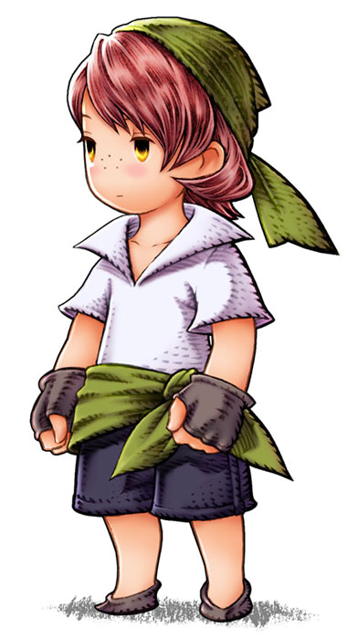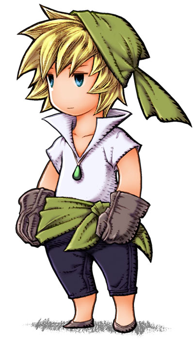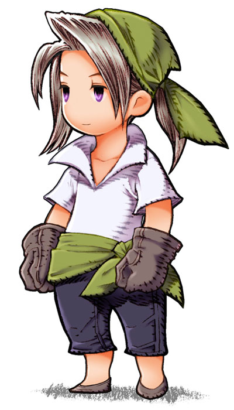 |
| NAME: Thief |
| OVERVIEW: This is the first character who has the ability to steal. |
| WEAPONS: Knife, Dagger, Mithril Knife, Orialcon, Air Knife, Main Gauche, Boomerang
|
ABILITIES/MAGIC:
Fight - Attack with equipped weapon
Steal - Take an item from an enemy
Run - Run away from battle
Item - Use an item from inventory
| ATTRIBUTES: High agility, low magic power, low magic defense |
|
|
| FF5 |
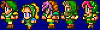
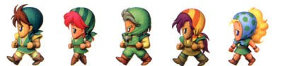 |
| NAME: Thief |
| OVERVIEW: The Thief Glove accessory increases the success rate of stealing. |
| WEAPONS: Knives, Full Moon, Rising Sun, Double Lance |
| ABILITIES/MAGIC:
Find Passages - Detect "hidden" rooms and passages
!Flee - Escape from battle quickly, does not work on bosses
Dash - Hold down B button to double walking speed on world map
!Steal - Steal treasure from an enemy (default)
Caution - Prevent back attack
!Mug - Attack and steal treasure
Agility - Have same speed as thief despite job class
|
| ATTRIBUTES: High speed, low magic |
|
| FF6 |
| 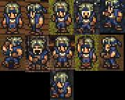 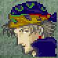 |
| NAME: Locke Cole |
| OVERVIEW: Official job class is Adventurer. The Thief Glove accessory turns Steal into Capture, which does damage and steals at the same time. |
| WEAPONS: Knives, Swords, Throwable weapons |
| ABILITIES/MAGIC:
Steal - Steal treasure from enemy
|
| ATTRIBUTES: High speed, low magic evade |
|
| FF9 |
 |
| NAME: Zidane Tribal |
| OVERVIEW: Zidane's Trance changes Skill to Dyne. The Master Thief ability increases the steal rate of rare items. Mug automatically inflicts damage while stealing. The Thief Glove accessory increases the success rate of stealing. |
| WEAPONS: Daggers, Swallowtail |
ABILTIES/SKILLS:
Steal - Steal treasure from an enemy
Skill:
Flee - Escape from battle
Detect - See enemy's items
Soul Blade - Inflict the status attributed to sword on enemy
What's That?! - Turn enemies around to create Back Attack scenario
Annoy - Inflict Trouble on target
Sacrifice - Remove self from battle to restore HP and MP to allies
Lucky Seven - Inflict 7, 77, 777, or 7777 points of damage to target when Zidane's HP ends in 7
Thievery - Deal damage to target proportional to number of successful steals
Dyne: Free Energy, Tidal Flame, Scoop Art, Shift Break, Stellar Circle 5, Meo Twister, Solution 9, Grand Lethal |
|
| SUPPORT ABILITIES (character specific): Steal Gil, Master Thief, Mug, Bandit, Protect Girls, Flee-Gil
|
| ATTRIBUTES: High speed, high magic defense
|
| FF10 |
 |
| NAME: Rikku |
| OVERVIEW: Rikku is also a Chemist. Like FF5 Chemist, there are certain items only she can use, like Tonics, and offensive items like grenades and elemental gems. |
| WEAPONS: Claws |
ABILITIES/MAGIC:
Steal - Steal treasure from enemy
Use - Use special attack, recovery, and support items
Luck - Raise party's Luck (accuracy, evasion, & critical hit rate)
Jinx - Lower enemy party's Luck (accuracy, evasion, & critical hit rate)
Bribe - Give money to an enemy to leave battle
Spare Change - Attempt to pay enemies to leave battle and receive items in exchange (success rate depends on amount given)
Copycat - Repeat the last action of an ally (except Overdrive, Summons, or equipment change)
Mug - Damage and steal treasure from enemy
Overdrive:
Mix - Combine two items into a different item |
| ATTRIBUTES: High speed, low strength |
|
| FFX-2 |
 |
| NAME: Thief |
| OVERVIEW: Includes a few odd abilities like causing Stop and casting Berserk. |
| WEAPONS: Twin daggers |
ABILITIES/SKILLS:
Steal - Steal treasure from enemy
Flee - Escape from battle with high success rate
Flimflam:
Pilfer Gil - Steal gil from enemy
Borrowed Time - Cast Stop on enemy
Pilfer HP - Steal HP from enemy
Pilfer MP - Steal MP from enemy
Sticky Fingers - Steal with 100% success rate
Master Thief - Steal rare item from enemy
Soul Swipe - Cast Berserk on enemy
Steal Will - Cause target to flee from battle
| SUPPORT ABILITIES: Item Hunter (increase odds of item drops), First Strike (act first in battle), Initiative (increases chance of pre-emptive strike), Slowproof, Stopproof |
| ATTRIBUTES: High speed, high evasion, high luck |
|
|
| FF11 |
  |
| NAME: Thief |
| OVERVIEW: Relies on sneak attacks and evasion. |
| WEAPONS: Uses daggers best |
| ABILITIES/MAGIC:
Perfect Dodge - Evade all physical attacks
Steal - Steal items from enemy
Sneak Attack - Deal critical damage when striking from behind
Flee - Increase speed
Trick Attack - Deal extra damage when striking from behind a party member
Mug - Steal gil from enemy
Hide - Become invisible |
| SUPPORTED ABILITIES: Gilfinder, Evasion Bonus, Resist Gravity, Treasure Hunter, Triple Attack, Assassin |
| ATTRIBUTES: High speed, low attack power |
|
| FF12RW |
 |
| NAME: Vaan |
| OVERVIEW: Although Vaan can't steal items from enemies, he can steal everything else! |
| WEAPONS: Swords |
| ABILITIES/MAGIC:
Dual Attack (Slash twice)
Sprint (Increase movement speed)
Steal Speed
Steal Endurance
Steal Power
Timeslip (Inflict Stop on enemy)
Dervish (Increase attack speed)
|
|
| FF: Tactics |
   |
| NAME: Thief |
| OVERVIEW: This thief can also steal equipped items, gil, and experience. |
| WEAPONS: Knife |
ABILITIES/MAGIC:
Steal:
Steal/Gil Taking (PSX)- Steal gil
Steal Heart - Charm an enemy of the opposite sex
Steal Helmet - Steal equipped helmets
Steal Armor - Steal equipped armor
Steal Shield - Steal equipped shield
Steal Weapon - Steal equipped weapon
Steal Accessory - Steal equipped accessory
Steal Exp - Steal EXP
Reaction Ability: Vigilance/Caution (PSX) - take defensive position; Gil Snapper/Gilgame Heart (PSX) - Receive gil proportional to amount of damage caused; Sticky Fingers/Catch (PSX) - catch and keep thrown item
Support Abilities: Poack/Secret Hunt - Take a monster to the fur shop after being beaten
Move Abilities: Move +2, Jump +2
|
| ATTRIBUTES: High evasion, high speed, low MP, low magic power |
|
| FF: Tactics Advance |
    |
| NAME: Thief |
| OVERVIEW: This Thief can also steal abilities. Shares Counter with Monk. |
| WEAPONS: Knife |
ABILITIES/MAGIC:
Steal:
Steal: Armor - Steal enemy armor
Steal: Shield - Steal enemy shield
Steal: Access - Steal enemy accessory
Steal: Helm - Steal enemy helm
Steal: Weapon - Steal enemy weapon
Steal: Gil - Steal enemy gil
Steal: Exp - Steal enemy experience
Steal: JP - Steal enemy judge point
Steal: Ability - Steal enemy ability
Reaction Abilities: Counter - Counter physical attack
Support Abilities: Maintenance - Equipped weapons cannot be stolen
Combo: Thief Combo
|
| ATTRIBUTES: High evasion, low MP |
|
| FF: Tactics A2 |
      |
| NAME: Thief |
| OVERVIEW: Although the Thief can no longer steal most equipment or abilities, they do steal loot. |
| WEAPONS: Knife |
ABILITIES/MAGIC:
Thievery:
Loot Lv. 1 - Steal LV1 Loot
Loot Lv. 2 - Steal LV2 Loot
Loot Lv. 3 - Steal LV3 Loot
Loot Lv. 4 - Steal LV4 Loot
Steal Gil - Steal enemy gil
Steal Items - Steal usable items
Steal Limelight - Steal Smash Gauge points
Steal Accessory - Steal enemy accessory
Reaction Abilities: Counter - Counter physical attack
Support Abilities: Safeguard - Equipped weapons cannot be stolen/broken
|
|
Traits of Thief in Other Games
| FF4: Edge also has the ability to steal from enemies and to Flee without losing GP. |
| FF7: There is a Steal materia which allows the user to Steal, and later, Mug. |
| FF8: Diablos and Bahamut teaches the Mug ability. |
| FF10: The ability Flee is learned by Tidus primarily. |
| FFTA: The Soldier has the ability to Mug. |
Final Fantasy, all games and animation bearing the Final Fantasy name, and all characters in said games or animation are copyright their respective creators, including but not limited to Squaresoft, Square Enix, Square EA, Tokyo TV, and ADV Films.
 Characters
Characters Places
Places Stories
Stories Species
Species Organizations
Organizations Glossary
Glossary Transportation
Transportation Monsters
Monsters Jobs
Jobs Summons
Summons Items
Items Magic/Skills
Magic/Skills Weapon Types
Weapon Types In-Crossovers
In-Crossovers Ex-Crossovers
Ex-Crossovers Release Dates
Release Dates Name Origins
Name Origins Famous Moments
Famous Moments Music Database
Music Database Features
Features Game Help
Game Help Game Evolution
Game Evolution Square Art
Square Art Fan Flash
Fan Flash Final Fantasy Forums
Final Fantasy Forums Updates
Updates Site Info
Site Info Feedback
Feedback Full Index
Full Index Links
Links Staff
Staff